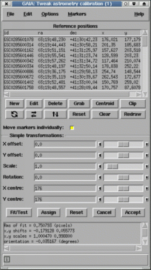

This window is designed to allow you to tweak your astrometric coordinate system by adding in a linear transformation that corrects the positions on your image. To use it you need to go through several stages:
You can get reference position information from many sources (consulting your coworkers about how they get such information is often a good start), but the most easily available in GAIA is from the Guide Star Catalogue (GSC) and US Naval Catalogue (USNO) which you can query using the "Catalogues..." item under the "Data-Servers" menu on the main window.
After you've made a query to a catalogue for some reference positions, you can copy these to this window using the "Grab" button. This creates a dialog window from which you need to select the catalogue you're interested in.
All the reference positions are listed in the reference table. To modify one of these values you either:
To do this just press the "New" button and fill in the dialog window. Remember to give a valid "id" (which can be any unique string or number) and press "Enter" to create the new object. You can enter more than one object at a time by editing new values and pressing "Enter" again.
Either select the row in the reference table and press the "Delete" button, or press <Control-Mouse-Button-1> over the marker. Note you can delete many rows at a time by selecting all their entries in the reference table.
Each reference position is associated with a graphics marker that is displayed over the image (the default is a small circle). The position of this marker identifies the point on the image that corresponds to the correct position on the sky.
If you want to move all the markers as if they where coupled together (so that for instance they all move by the same amount, or rotate/scale about the same point). Then you can achieve this in two ways:
Just place your cursor over the marker you're interested in and the appropriate row in the reference table will be highlighted. Double clicking the marker also shows the values associated with the object.
Pressing mouse button 2 over a selected row in the table attempts to centre the image about the associated marker.
If your reference positions are all stars (or non-confused peaked objects), then you can accurately position the markers by centroiding. Just press the "Centroid" button.
After you've got sufficient reference positions created and you've positioned their graphics markers to your satisfaction, you can attempt a tweak by pressing the "Fit/Test" button. The results of the fit are displayed in a scrollable window just below the "Test" button.
The fitting process uses a linear transformation between the projected X and Y positions (i.e. those your current calibration provide) and the new positions that you've determined. You can control the level of refinement by selecting the "Options" menu and choosing a different type of linear fit used to make the refinement (this is useful when you know certain properties of the coordinate system). The results that you see are those of this fit, not of the sky coordinate system to the image.
Note: that if you've applied a simple transformation to the markers (using the sliders and entry fields) then you should press the "Assign" button rather than the "Fit/Test" button (actually this makes little difference when you have many reference positions, as it is almost identical to using "Fit/Test" with a solid body fit, but if you want to apply a simple transformation to the coordinates without reference positions, then it is essential).
After doing a tweak you can assess it visually by checking the new marker positions, which are updated. You can also read off positions using the main window facilities, check the axes orientations using a grid overlay (see "Overlay axes grid..." under "Image-Analysis") and replot any catalogues positions from query windows.
When you're happy with the quality of your new calibration press the "Accept" button to close the window. This updates the image with the new astrometric system, but to retain this information you need to save the image to disk (see the "Save as..." item in the "File" menu).
Open the "Graphics" menu. Under this are many options for setting the size, shape and colour of the markers.
You can do this by closing the window, or by using the "Clear" item under the "Graphics" menu.
Open the "Graphics" menu and select the "Redraw" item.
Press the "Clip" button.
You can write a plain text file copy of the reference positions using the "Write positions to a file..." item in the "File" menu. These can be read back later using the "Read positions from a file...".
You can read in reference positions from plain text files using the "Read positions from a file..." item in the "File" menu. The format of these files should be either: